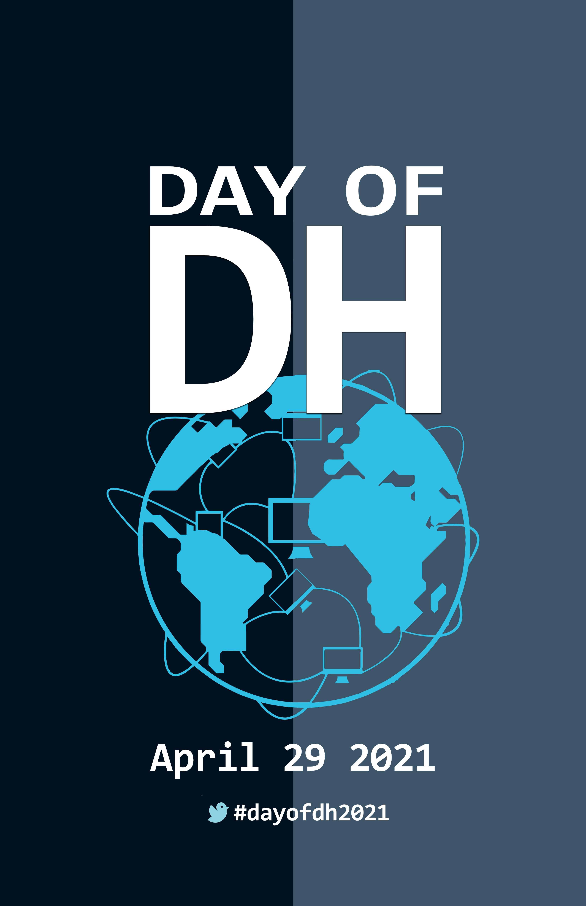

Repositório Digital das Humanidades (pt-BR)
A ideia desta obra foi reunir esforços de diferentes pesquisadores e instituições na elaboração de scripts para coletar - de modo automatizado - a produção intelectual dos principais congressos e eventos das áreas das humanidades.
Além disso, nós tivemos como objetivo mais amplo enfatizar a importância do desenvolvimento de habilidades computacionais por parte dos pesquisadores em todos os campos das humanidades.
Os scripts, as bases de dados e todos os documentos estão disponíveis e poderão ser baixados com apenas um clique. O acervo servirá para a realização de investigações sobre os mais variados aspectos e ampliar, com isso, o conhecimento sobre a produção acadêmica, científica e intelectual do Brasil das ciências humanas e sociais ao longo de décadas.
Para o lançamento do Repositório Digital das Humanidades (PT-BR) - REDHBR, nós escolhemos o Dia Internacional das Humanidades Digitais em 29/04/2021.
Ao compartilhar nas redes, pedimos que usem a hashtag #dayofdh21

Web scraping e ciências sociais
Por que automatizar?
A dataficação e a digitalização tornaram-se fenômenos massivos das sociedades contemporâneas. Ao interagirmos com as tecnologias digitais nós deixamos traços de dados que podem ser usados para a pesquisa sobre a sociedade. O desafio colocado para os pesquisadores das humanidades está em acessar e manipular tais dados:
“Como uma técnica de extração de dados online, o [web scraping] parece de interesse especial para nós porque é uma parte importante do que torna a pesquisa social digital praticamente possível.” (MARRES, N. & WELTEVREDE, E. Scraping the Social? Journal of Cultural Economy, v. 6, n. 3, p. 313–335, 1 ago. 2013, p.317)
O volume, quantidade e qualidade dos dados digitais e digitalizados nunca foi tão grande. O acesso à fontes digitalizadas através de mecanismos de busca por palavras-chave, por assuntos, por metadatos em geral, os milhares de dados produzidos a cada segundo nas redes sociais ou o volume de publicações acadêmicas têm impactado as pesquisas e a própria construção do conhecimento nas ciências humanas e sociais.
Assim, é urgente a necessidade de enfrentarmos os desafios metodológicos e teóricos colocados por esse cenário. A automatização na coleta de dados na Web não é apenas uma forma de acelerara essa relação do pesquisador com os dados, mas de qualificar e potencializar a tarefa heurística de seleção dos mesmos.
Como começar?
É preciso aprender algum tipo de linguagem de programação (geralmente R ou Python), além de conhecimentos em HTML, CSS e XPATH. Sabemos que, à primeira vista, parecem ser termos complicados para quem vem "das humanas", mas o entendimento destas coisas é relativamente mais simples que muitas das leituras que nós fazemos.
Portanto, talvez o primeiro passo seja buscar compreender a estrutura da página que abriga os dados que você pretende coletar. Para isso, é preciso conhecer o mínimo de HTML.
Em seguida é importante definir quais dados e informações você pretende coletar e qual a estrutura de organização você pretende construir como resultado. Esse é um procedimento metodológico fundamental para a pesquisa e demanda do pesquisador o mesmo rigor acadêmico do trabalho com dados de outra natureza.
Por fim, a escrita do código, utilizando a linguagem que melhor atenda aos seus interesses.
Todos esses processos demandam um empenho de tempo e formação técnicas específicas, sem dúvida. Entretanto, acreditamos que os retornos possíveis justificam o investimento de tempo. Além disso, amplia as possibilidades de trabalho interdisciplinar, colaborativo e aberto.
Web scraping enquanto técnica das humanidades
Ao realizarmos um web scraping é preciso atentar para os procedimentos não apenas “técnicos” envolvidos na raspagem mas, também, para os aspectos analíticos e epistemológicos. Cada plataforma, website ou API possui características particulares que vão, juntamente com o código que vamos construir, determinar o tipo e natureza dos dados coletados.
A raspagem, entretanto, não é apenas uma técnica, mas também envolve uma forma particular de lidar com a informação e o conhecimento: é também uma prática analítica.(MARRES, N. & WELTEVREDE, E. Scraping the Social? Journal of Cultural Economy, v. 6, n. 3, p. 313–335, 1 ago. 2013, p.317)
Erros no código de raspagem podem produzir dados distorcidos, com lacunas ou mesmo em duplicidade. Podemos, então, considerar que um erro no código torna-se um erro metodológico.
Linguagens de programação
R
R é uma linguagem e um ambiente de desenvolvimento integrado, para cálculos estatísticos e gráficos. Foi criada originalmente por Ross Ihaka e por Robert Gentleman no departamento de Estatística da universidade de Auckland, Nova Zelândia, e foi desenvolvido por um esforço colaborativo de pessoas em vários locais do mundo.O nome R provêm em parte das iniciais dos criadores e também de um jogo figurado com a linguagem S (da Bell Laboratories, antiga AT&T).
O código fonte do R está disponível sob a licença GNU4 5 GPL e as versões binárias pré-compiladas são fornecidas para Windows, Macintosh, e muitos sistemas operacionais Unix/Linux. R é também altamente expansível com o uso dos pacotes, que são bibliotecas para funções específicas ou áreas de estudo específicas.Um conjunto de pacotes é incluído com a instalação de R, com muito outros disponíveis na rede de distribuição do R (em inglês CRAN).
Um dos pontos fortes da linguagem R é a sua comunidade, extremamente acolhedora e que estimula todos os novos participantes. No Telegram existe existe um grupo extremamente ativo onde é possível tirar dúvidas: R Brasil
Python
Alguns dos códigos que compõe o Redhbr foram escritos em Python 3.8. Esta é uma linguagem de programação que permite ao programados trabalhar rapidamente e integrar diferentes sistemas com maior eficiência.
Foi lançada por Guido van Rossum em 1991. Atualmente, possui um modelo de desenvolvimento comunitário, aberto e gerenciado pela organização sem fins lucrativos Python Software Foundation.^[Python - Wikipedia.org]
Parte da filosofia da linguagem está resumida no poema Zen of Python, escrito por Tim Peters em 1999.
Bonito é melhor que feio
Explícito é melhor que implícito
Simples é melhor que complexo
Complexo é melhor que complicado
Linear é melhor do que aninhado
Esparso é melhor que denso
Legibilidade conta
Casos especiais não são especiais o bastante para quebrar as regras.
Ainda que praticidade vença a pureza
Erros nunca devem passar silenciosamente.
A menos que sejam explicitamente silenciados
Diante da ambiguidade, recuse a tentação de adivinhar
Deveria haver um — e preferencialmente apenas um — modo óbvio para fazer algo.
Embora esse modo possa não ser óbvio a princípio a menos que você seja holandês
Agora é melhor que nunca
Embora nunca frequentemente seja melhor que já
Se a implementação é difícil de explicar, é uma má ideia
Se a implementação é fácil de explicar, pode ser uma boa ideia
Namespaces são uma grande ideia — vamos ter mais dessas!^[Zen of Python - Wikipedia.org]
Para executar um arquivo .py é preciso instalar o Python3 em seu computador.
Clique aqui para um tutorial de instalação do Python no Windows, clique aqui para Linux e clique aqui para Mac.
Após a instalação, vc pode executar o arquivo .py direto do prompt de comando do Windows ou pelo terminal do Linux, ou utilizar as diversas IDE disponíveis.
Segue um exemplo de como executar utilizando o terminal do Linux, após instalar o Python3.8:
- Acesse o diretório em que o arquivo .py está salvo:
sh
$ cd "caminho do diretório"
- Instale as bibliotecas requeridas:
sh
$ pip3 install -r requirements.txt
- Execute o arquivo usando Python3.8
sh
$ python3 exemplo.py
Navegue pelo menu de ferramentas à esquerda para acessar a documentação e os dados de cada uma delas.